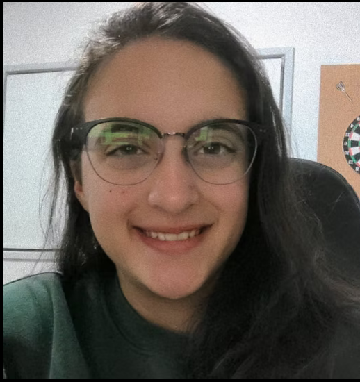

Completing my studies in December 2023 at SAE Creative Institute, a university that emphasizes hands-on,
accredited training from industry experts in state-of-the-art facilities, I majored in Games Development,
which provided me with expertise in programming, design, and UI/UX development.
However, my passion extends beyond game development—I also specialize in creating websites.
I find web development equally thrilling, as it allows me to combine both creativity
and technical problem-solving. Building websites excites me because it’s a dynamic
field where I can bring innovative ideas to life, shaping intuitive and
engaging online experiences. Whether it’s crafting responsive layouts, designing user-friendly interfaces,
or coding interactive features, I’m constantly driven by the challenge of creating websites that are both visually
appealing and functionally seamless.
Through my work, including this site,
I enjoy transforming concepts into functional, accessible digital experiences where users can interact,
explore, and engage with the content.
